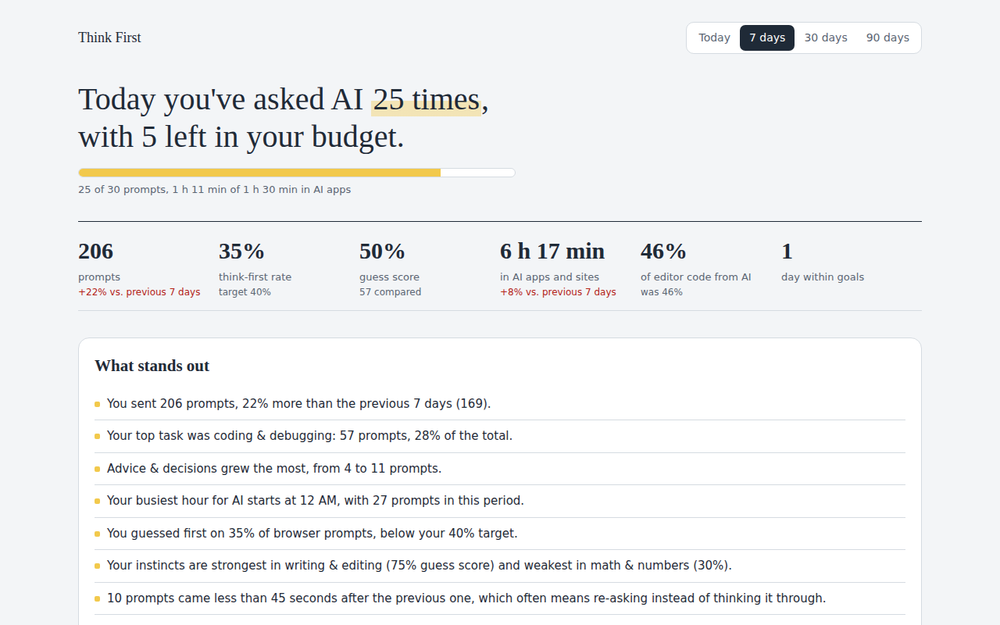

Think First has you write a quick guess before AI answers, shows you how close you were, and keeps an honest record of how much you rely on AI across your browser, apps, and code.
Free and open source. Runs entirely on your computer. No account.
Try it. One line is plenty.
Use one, or all three together.
Before a message goes to the AI, you jot down your own guess. When the answer finishes, Think First compares them and shows what you got right and what you missed.
Browser extensionCounts prompts from 9 AI sites and from Claude Code, Codex, and Gemini CLI, plus time spent in apps like ChatGPT and Claude. Goals and alerts keep you to the limits you set.
Mac appEstimates how much of the code you write comes from AI suggestions versus your own typing, and warns you past a level you choose.
VS Code and Cursor
Where your instincts are strongSee your guess score by task, so you know when you can trust yourself and when AI adds real value.
What you hand off mostEvery prompt is sorted into tasks like coding, emails, or math, with week-over-week trends.
Limits you chooseSet daily and weekly limits, a think-first target, and AI-free hours. Get a gentle notification when you drift.
Patterns you'd missLate-night use, rapid re-asking, your busiest hours, and a plain-language weekly summary.
There's no Think First server. Your prompts, guesses, and stats are stored in a file on your own machine. You can turn off saving prompt text, export everything, or delete it at any time.
Comparisons run on your deviceThink First uses the AI model built into Chrome, which runs locally and for free. If your computer can't run it, you can add your own API key instead.
No account, no trackingNo sign-up, no analytics, no ads. The code is open source, so anyone can check.
Built for you, not your bossThis is a tool for holding yourself accountable. It has no way to report to anyone else.
Start with the browser extension. Add the others when you want the full picture.
Chrome, Edge, Brave, Arc
macOS 11 or later
Optional, for people who code
Downloads appear here once this site is published from its GitHub repository.
Yes. Think First is free and open source. The optional API key route costs a fraction of a cent per comparison, billed by the AI provider to your own account.
The guess box works on Claude, ChatGPT, and Gemini. Prompt counting also covers Perplexity, Microsoft Copilot, DeepSeek, Grok, Mistral Le Chat, and Poe. The Mac app counts Claude Code, Codex CLI, and Gemini CLI, and time in desktop AI apps.
You can skip any guess with Esc, set a minimum message length, or only be asked on tasks you use AI for often. Most people find one line of thinking takes a few seconds and changes how they read the answer.
Prompts typed inside desktop apps (only time is counted there), chat panels inside code editors, and browsers without the extension, such as Safari and Firefox.
The browser and VS Code extensions do. The whole-computer tracker runs on Windows and Linux with Python, but there's no one-click installer for them yet.